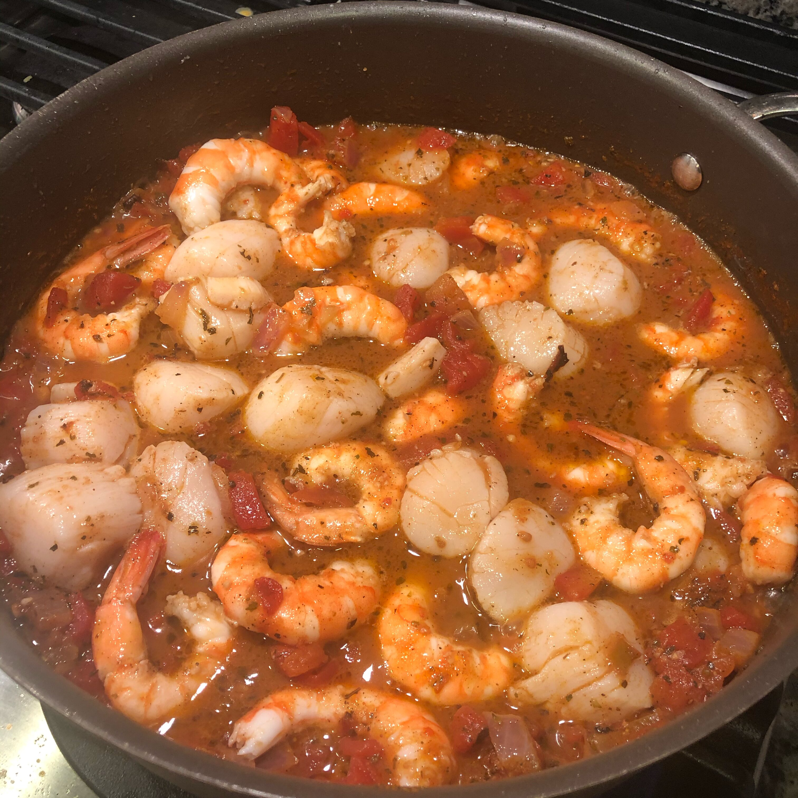

Seafood Creole

(recipe from: allrecipes.com by Plain ole Bob)
Description
This is a spicy sauce similar to etouffee. By adding seafood,
it becomes Seafood Creole.
Ingredients
Yields 6 servings
- ¾ teaspoon dried oregano
- ½ teaspoon salt
- ½ teaspoon ground white pepper
- ½ teaspoon ground black pepper
- ½ teaspoon cayenne pepper
- ½ teaspoon dried thyme leaves
- ½ teaspoon dried sweet basil
- ¼ cup butter
- 1 cup peeled chopped tomato
- ¾ cup chopped onion
- ¾ cup chopped celery
- ¾ cup chopped green bell pepper
- 1½ teaspoons minced garlic
- 1¼ cups chicken stock
- 1 cup canned tomato sauce
- 1 teaspoon white sugar
- ½ teaspoon hot pepper sauce (such as Tabasco®)
- 2 bay leaves
- 1 pound peeled and deveined rock shrimp (thawed if frozen)
- 1 pound bay scallops (thawed if frozen)
- 1 pound haddock fillets (thawed if frozen) - cut into bite-size pieces
Steps
- Mix together oregano, salt, white pepper, black pepper, cayenne pepper,
thyme, and basil in a small bowl; set aside.
- Melt butter in a large Dutch oven over medium heat; stir in tomato,
onion, celery, green bell pepper, and garlic. Cook and stir until
the onion is translucent, about 5 minutes.
- Stir in chicken stock, tomato sauce, sugar, hot pepper sauce, and
bay leaves. Reduce heat to low and bring sauce to a simmer.
Stir in seasoning mix and simmer until the flavors have blended,
about 20 minutes.
- Gently stir in rock shrimp, bay scallops, and haddock; bring
sauce back to a simmer and cook until the shellfish and fish
are opaque, about 20 more minutes. Remove bay leaves to serve.
Note
Due to the seasoning mix, it is quite spicy. This can be controlled by
adjusting the amount of the peppers. This recipe is full strength, but
for those who want it less spicy you can cut the peppers down to
1/8 teaspoon each. This recipe can easily be doubled or quadrupled for
large affairs. It goes great with rice, garlic bread, a green salad
and a good white wine, such as white Merlot, white Cabernet,
Johannisburg Riesling, or Gewurztraminer. Use your favorite firm,
white fish fillets in this recipe. Canned diced tomatoes can be
used in place of chopping fresh tomatoes.
Nutrition Facts
Per Serving:
328 calories; protein 47.2g; carbohydrates 11.8g; fat 10g;
cholesterol 224.1mg; sodium 1018.8mg.